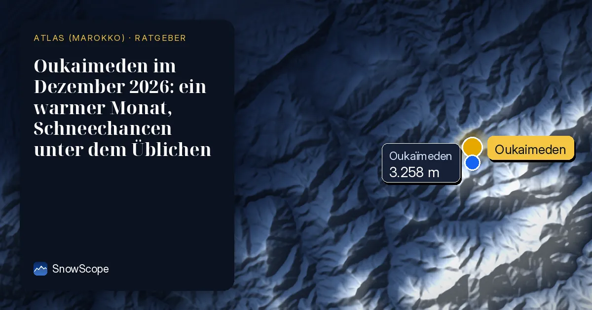

Oukaimeden im Dezember 2026: ein warmer Monat, Schneechancen unter dem Üblichen
Oukaimeden liegt am 10. November schneearm. Die 6 cm, die letzte Woche oben gefallen sind, sind weg, und die kommende Woche bringt keinen Neuschnee. Die Saisonprognose für den Dezember zeigt deutlich wärmere Bedingungen im Hohen Atlas, und das verschärft die Schneeaussichten erheblich.
Die Live-Schneeprognose für Oukaimeden in der SnowScope-AppSchneehöhen, Pulverschnee-Alarme und 3D-Karte, gratis.

Kein Schnee auf dem Boden im Moment
Die Karte zeigt überall 0 cm: Basis auf 2.600 m, Mittelhöhe auf 2.930 m und Gipfel auf 3.260 m. Nur 1 % der Fläche im Umkreis von 60 km zeigt Weiß. Wir zeigen dir stattdessen den schneefreien Berg—Toubkals hohe Grate, wo Schnee zuerst bleibt, wenn der Winter kommt—damit du siehst, wo du auf die Eröffnung der Saison achten musst.
Die letzte Woche brachte 1 cm in Mittelhöhe und 6 cm oben, aber nichts blieb liegen. Die nächsten sieben Tage zeigen in keiner Höhenlage Neuschnee.
Dezemberausblick: wärmer als üblich, Schnee seltener
Die SnowScope-Karte vergleicht die Berge des Hohen Atlas rund um Oukaimeden mit ihrer eigenen Geschichte. In der gesamten Region zeigen 95 % der Fläche ein schwächeres Dezember-Schneesignal—weniger Orte als üblich werden significante Akkumulation bekommen. Keine der 55 Bergrasterzellen deutet auf einen schneereichen Dezember hin.
Die Wahrscheinlichkeit für Neuschnee über dem Dezemberdurchschnitt liegt zwischen 29 % und 43 % in der Region. Das heißt, grob genommen eine Chance von eins zu drei, dass dieser Monat nasser wird als frühere Dezember.

Was der Dezember normalerweise bringt, und wie es dieses Jahr aussieht
In einem typischen Dezember bekommen die hohen Hänge Oukaimedelns um 3.200 m 41 cm Neuschnee und halten am letzten Dezembertag 26 cm Schnee. Die Aussicht für dieses Jahr ist 37 cm Neuschnee, aber nur 13 cm am 31. Dezember. Die Spannweite der Unsicherheit ist groß: zwischen 0 und 29 cm ist die wahrscheinlichste Bandbreite. Die Wahrscheinlichkeit, dass der Schnee am Monatsende tiefer als üblich liegt, beträgt nur 26 %.
Wärme ist der treibende Faktor. Die früheren Dezember, die diese Prognose am meisten ähnelt, sind 2010, 2023 und 1989—Jahre, in denen Atlantikstürme selten waren und die Dezemberluft mehr Wärme als Kälte hielt. In solchen Monaten schmilzt der Schnee, der fällt, schnell unter der starken Wintersonne auf blankem Fels, besonders in tieferen Höhen.


Das europäische Saisonvorhersagesystem: fast sichere Wärme, gemischte Signale zum Regen
Die 51 Läufe der europäischen Hauptsaisonvorhersage sind bei einem Punkt bemerkenswert einig. Vierundneunzig Prozent sagen einen Dezember voraus, der wärmer als der Durchschnitt von 1993 bis 2016 ist, mit einer durchschnittlichen Erwärmung von 2,2 °C im Hohen Atlas. Solcher breite Konsens über Wärme ist selten.
Die Niederschlagssignale teilen die Prognosen. Einundfünfzig Prozent sagen einen nasseren Monat als üblich voraus; 49 % sagen einen trockeneren voraus. Im Durchschnitt addiert die Prognose 11 % zu den typischen 33 mm eines Dezember—ein kleiner Überschuss. Doch in diesen Bergen zählt die Temperatur mehr als der Gesamtniederschlag. Schnee reagiert eng auf das, was fällt (Korrelation 0,91 mit Niederschlag), verliert aber gegen Wärme. Ein paar Grad extra Hitze verwandeln fallende Niederschläge in Regen in tieferen Höhen und beschleunigen das Abschmelzen in hohen.

Wann du aufpassen solltest, und wo Schnee am längsten bleibt
Ein Atlantiksturm kann das monatliche Bild noch innerhalb von Tagen umkehren, daher ist die Dezemberaussicht eine Verschiebung der Chancen, keine fixe Prognose. Dezemberstürme sind im Atlas selten, aber nicht unmöglich. Wenn einer kommt—mit kalter Luft oben und organisiertem Niederschlag—werden Oukaimedelns höchste Hänge schnell weiß.
Wenn Schnee fällt, hält ihn der Gipfel (über 3.200 m) am längsten, weil die Luft in Höhe kälter bleibt und der Sonnenwinkel niedriger ist. Die Mittelhöhenhänge und die Basis verlieren Akkumulation innerhalb von Tagen, sobald eine warme Periode zurückkommt. Das ist der Grund, warum früher Saisonschnee auf Oukaimeden ein Fenster ist, keine Basis.
Tipps für Skifahrer
- Schau dir die Sturmprognose für 7 Tage an, bevor du einen Dezemberbesuch planst. Ein einzelnes Atlantiksystem kann selbst in einem warmen Monat Schnee auf die hohen Hänge bringen.
- Wenn Schnee kommt, ski oder wandere das höchste Gelände (über 3.200 m) innerhalb von 48 Stunden nach dem Sturm; tiefere Höhen werden innerhalb von Tagen blank.
- Bring Schichten mit: Der Dezember im Atlas schwingt zwischen warmen Nachmittagen und kalten Nächten, und die sonnigen Hänge können auch auf 3.000 m frühlingshaft wirken.
- Für Wanderungen über 3.000 m bring Felsenschuhe oder Steigeisen mit; rechne mit meist blankem Gelände im Dezember 2026 und plötzlichem Eis, wo Schmelzwasser nachts wieder gefriert.
- Bevor du abseits der Pisten nach seltenenem Dezemberschneefall gehst, check das offizielle Lawinenbulletin für die Atlas-Region.
Zu diesen Zahlen
Die Schneehöhen der Skigebiete sind der meiste Schnee in den oberen Hängen am angegebenen Tag; es sind Schätzungen für eine Fläche, keine Messung an einem Punkt. Prognosen können sich ändern. Lies vor dem Freeriden immer den offiziellen Lawinenlagebericht.
Diesen Bericht zitieren
Für Forschung, Lehre oder Presse: Zahlen und Grafiken sind unter CC BY 4.0 mit dieser Quellenangabe frei nutzbar.
SnowScope (2026), Oukaimeden im Dezember 2026: ein warmer Monat, Schneechancen unter dem Üblichen, https://snowscope.app/blog/de/2026/11/oukaimeden-december-2026-snow-outlook.html, abgerufen am 2026-11-10
SnowScope (Atlas Labs). (2026, November 10). Oukaimeden im Dezember 2026: ein warmer Monat, Schneechancen unter dem Üblichen. SnowScope snow reports. https://snowscope.app/blog/de/2026/11/oukaimeden-december-2026-snow-outlook.html
BibTeX
@misc{snowscope2026oukaimedendecember2026sn,
author = {{SnowScope (Atlas Labs)}},
title = {Oukaimeden im Dezember 2026: ein warmer Monat, Schneechancen unter dem Üblichen},
year = {2026},
month = nov,
howpublished = {\url{https://snowscope.app/blog/de/2026/11/oukaimeden-december-2026-snow-outlook.html}},
note = {Published 2026-11-10 09:30 UTC; accessed 2026-11-10}
}· CC BY 4.0 · Methoden, Daten und Werkzeuge →
Oukaimeden folgen
Gratis: eine Nachricht, wenn Neuschnee kommt, und jeden Morgen die Vorhersage.